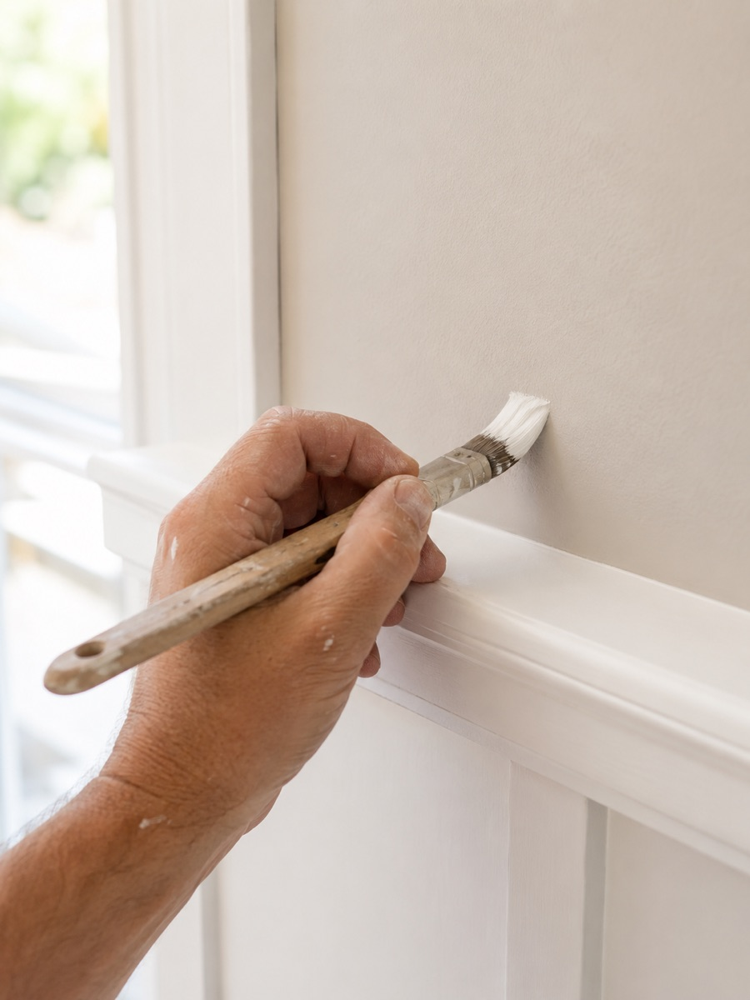

Interior Painting in Burbank, CA
From a single accent wall to a full whole-house repaint, done clean and finished right. Free estimates across Burbank.
Notice how much duller a room looks once the paint's taken a few years of daily wear? We handle interior painting for homeowners throughout Burbank, whether that means one accent wall or repainting an entire house room by room. Selling soon, turning over a rental, or just tired of staring at the same color? Either way, our crew takes care of the prep, the painting itself, and the cleanup, so you end up with a clean, even finish and don't spend a week living around drop cloths.
What Interior Painting Involves
Walls, ceilings, trim, doors, cabinets: interior painting touches all of it, and each surface calls for its own prep and its own product. Furniture gets moved or covered first, floors get protected with drop cloths, and any dings, cracks, or holes in the drywall get patched before anything else happens. Trim gets a light sanding and a bead of caulk where it meets the wall, which is what keeps the paint line looking crisp instead of ragged. Most rooms get a washable, low-VOC paint, since it stands up better to everyday use and doesn't leave the house smelling like a paint shop for days afterward.

When You Need Interior Painting
Rooms typically need repainting every seven to ten years, sooner than that in spots that see heavy use: hallways, kitchens, kids' bedrooms, anywhere that picks up scuffs and marks faster than the rest of the house. Watch for paint that's started to fade or yellow, patch marks from old repairs showing through, dings and marks that a bit of touch-up paint just can't cover anymore, or simply wanting a color you actually like better than whatever the last owner chose. Landlords in Burbank call us between tenants often too, since a fresh coat protects the walls and helps a unit photograph better for the next listing.
Why Interior Paint Problems Happen
When interior paint peels, cracks, or looks uneven, the cause is almost never the paint itself. It's what happened, or didn't happen, before the paint went on. Rolling paint over a surface that's still dirty, greasy, or glossy keeps it from bonding the way it should. Skip primer on a patched section of drywall and you'll see a flat spot where the sheen looks different once everything dries. Cheap paint spread too thin to save a few dollars wears through fast and shows every roller mark in the wrong light. Prepping and priming every surface first is the actual reason a paint job lasts years instead of needing a redo in two.
What Affects Interior Painting Cost
Interior painting pricing comes down to a handful of things: how much prep the walls actually need, how many rooms you're doing and how big they are, ceiling height, the number of doors and trim pieces, and which grade of paint you pick. A room that needs heavy patching, wallpaper stripped, or a textured ceiling dealt with takes longer to prep than one with smooth, undamaged walls, and the estimate reflects that. We walk through the space with you before quoting, so what you're charged matches what your walls actually need.
Cabinet Painting, Drywall Repair & Wallpaper Removal
Plenty of the interior calls we get in Burbank have nothing to do with plain walls. Cabinet painting and refinishing is a big one: spraying the doors and frames gives a dated kitchen a factory-smooth new look without the cost of a full remodel, and we'll swap out worn hardware while we're at it if you want. Drywall repair is another, patching holes, cracks, and water stains before paint goes anywhere near them, since painting over unrepaired drywall just draws attention to the damage instead of covering it. And in some of Burbank's older craftsman and mid-century homes, there's still wallpaper hanging around from a previous owner. How cleanly it comes off depends on the paper and the adhesive underneath, and we handle whatever wall repair is needed once it's stripped, so you're not left with a lumpy, uneven surface.
Touch-Up vs. Full Repaint
A full repaint isn't always the right call. Walls that are mostly in good shape with just a few scuffs or nail holes can get a few more years out of a touch-up using matched paint. A full repaint earns its cost when you're switching colors, when old patch marks are visible in certain light, when paint's chalking or peeling in more than one spot, or when you're getting a room ready to sell or re-rent. We'll give you a straight answer on which one your room actually calls for, not the more expensive option by default.
Frequently Asked Questions
How long does interior painting actually take?
A single room usually runs one to two days once you count prep and drying time between coats. For a full interior repaint of an average Burbank home, figure three to six days depending on room count, ceiling height, and how much patching the walls need.
Do I have to move all my own furniture first?
Smaller and medium pieces, yes, pulled into the middle of the room or taken out entirely if you can manage it. Anything too big or heavy for us to move ourselves, we'll shift into place and wrap in plastic so it stays paint-free.
Which paint finish is right for my room?
Eggshell or satin covers most living spaces well since both wipe clean without a heavy shine. Kitchens and bathrooms hold up better with satin or semi-gloss because of the moisture, and ceilings almost always get a flat finish to keep imperfections from standing out.
Can you match a color I already have on my walls?
In most cases, yes. Hand us a paint chip, the original can, or even a small chip cut from the wall itself, and we can get you a close or exact match before starting.
Should I worry about lead paint in an older Burbank home?
If your house was built before 1978, there's a real chance older paint layers contain lead. Mention that when you call, and we'll prep those surfaces the safe way instead of dry-sanding, which is the step that actually releases the hazard into the air.
Time to give your rooms a change? Call (857) 371-3693, or send us the form on this page and we'll follow up with a free estimate.